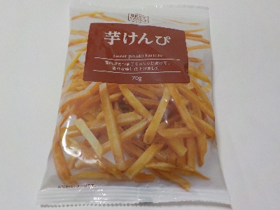
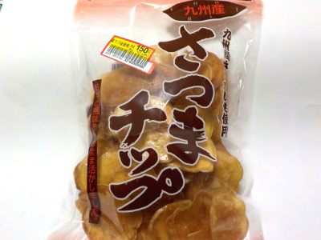

横山食品の芋ケンピ
2024/03/29

ドラッグストアコスモスで98円でした。
70グラム入ってこの値段は安いですね。これくらいの値段だと気軽に買えていいです。
芋ケンピは細いのでカリカリとしていました。砂糖が効いてて甘くて美味しかったです。
鹿児島県曽於市末吉町深川11111番地4
2024/03/29

ドラッグストアコスモスで98円でした。
70グラム入ってこの値段は安いですね。これくらいの値段だと気軽に買えていいです。
芋ケンピは細いのでカリカリとしていました。砂糖が効いてて甘くて美味しかったです。
2023/03/10

サツマイモが砂糖でコーティングされてて、パリパリ食感でした。
大学イモのスライス版みたいだと思いました。
甘いオヤツでした。